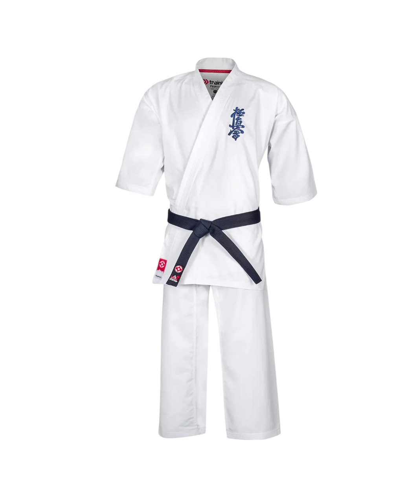
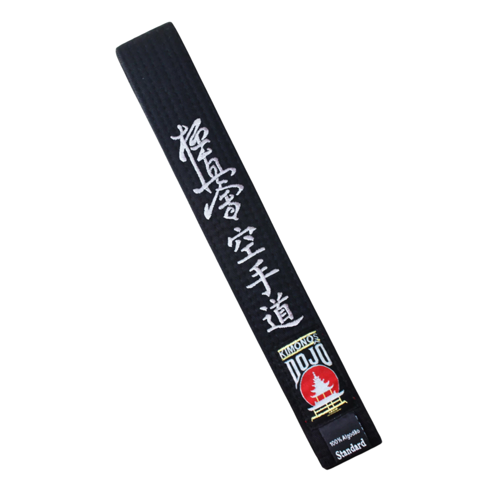

Mae Geri
Chute frontal rápido usado para manter distância e atingir o abdômen.
O caminho da verdade. Disciplina, força e superação.
Arte marcial full-contact criada por Masutatsu Oyama. O Kyokushin desenvolve disciplina mental, resistência física e combate real.

Chute frontal rápido usado para manter distância e atingir o abdômen.
Low kick na perna para enfraquecer a base e mobilidade do adversário.
Soco reverso forte, principal golpe de potência do karate.
Chute circular usado para atingir costelas ou cabeça.
Joelhada de curta distância, muito forte no combate próximo.
Sequência de socos no corpo para pressionar e cansar o adversário.
Movimento de esquiva e ângulo para sair da linha do ataque e contra-atacar.
Um roupão longo em formato de "T", com mangas largas e retas, que envolve o corpo

As faixas no Karate Kyokushin representam a evolução técnica, física e espiritual do praticante

"Mudou minha vida."
João
"Treino duro e recompensador."
Maria
"Comunidade incrível."
Pedro
Faixa Branca
11° KyuFaixa Laranja
10° e 9° KyuFaixa Azul
8° e 7° KyuFaixa Amarela
6° e 5° KyuFaixa Verde
4° e 3° KyuFaixa Marrom
2° KyuFaixa Marrom com Ponta Preta
1° KyuFaixa Preta
Senpai